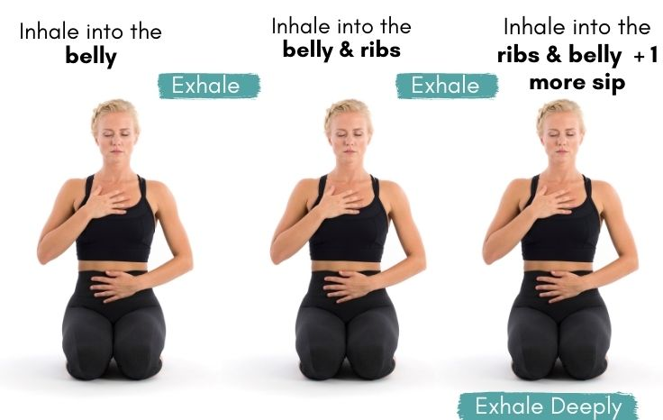

Pranayama is the practice of breath control in yoga. The term is derived from the Sanskrit words "prana," meaning life force or vital energy, and "ayama," meaning control or expansion. In yogic philosophy, prana is believed to be the subtle energy that animates and sustains life. Pranayama techniques involve conscious regulation of the breath to enhance the flow of prana in the body.
1.Ujjayani Pranayama :
Also known as the "Victorious Breath" or "Ocean Breath," Ujjayi involves breathing slowly and deeply through the nose, creating a sound in the back of the throat that resembles the ocean.
how to do
**Sit comfortably in a cross-legged position or lie down in a relaxed posture.
Inhale deeply and slowly through your nose.
Constrict the back of your throat as you exhale slowly through your nose.
As you exhale, produce a soft "haa" sound in the back of your throat. The sound is similar to the sound of the ocean or a light snoring noise.
Inhale and exhale evenly, focusing on making the breath smooth and controlled.
Feel the sensation of the breath at the back of your throat.
6.Sheetali Pranayama:
Sheetali Pranayama, also known as Cooling Breath, is a yoga breathing technique that is designed to cool the body and calm the mind. "Sheetali" comes from the Sanskrit word "Sheetal," which means cool or soothing. This pranayama is particularly useful for reducing stress, anxiety, and excess heat in the body.
how to do
Preparation:
Find a comfortable seated position. You can sit on the floor with your legs crossed (in Sukhasana) or on a chair with your feet flat on the ground.
Ensure that your spine is straight, and your shoulders are relaxed.
Mudra (Hand Gesture):
Adopt a mudra called Vishnu Mudra. Curl the sides of your tongue to form a tube-like shape. If you are unable to curl your tongue, you can simply press the tip of your tongue against the back of your front teeth.
Place your hands on your knees with the palms facing upward. Close your eyes to enhance your focus inward.
Inhalation:
Inhale slowly and deeply through the rolled tongue (or the slightly open mouth if you cannot roll your tongue). Feel the coolness of the breath as it passes through the tongue.
Inhale to a comfortable capacity without straining.
Retention:
After a full inhalation, close your mouth and hold the breath for a few moments. This is the retention phase.
Exhalation:
Exhale slowly and completely through the nostrils. Focus on the warm sensation of the breath as it leaves your body.
This completes one round.
Repeat:
Continue for several rounds, gradually increasing the duration of inhalation, retention, and exhalation as you become more comfortable with the practice.
You can start with 5 rounds and gradually increase to 10 or more as you progress.
8.Bhastrika Pranayama:
Bhastrika Pranayama, often referred to as Bellows Breath, is a powerful and energizing yogic breathing technique. The name "Bhastrika" is derived from the Sanskrit word "Bhastrika," which means bellows. This pranayama involves rapid and forceful inhalations and exhalations, creating a bellows-like movement in the abdomen. Bhastrika Pranayama is known for its ability to increase energy, improve mental clarity, and enhance lung capacity.
how to do
Preparation:
Sit in a comfortable and stable posture, such as Sukhasana (cross-legged) or Padmasana (lotus pose). Keep your spine straight and shoulders relaxed.
Place your hands on your knees in a mudra (gesture) of your choice, such as Jnana Mudra (touching the tip of the thumb to the index finger with the other fingers extended).
Breathing Technique:
Take a few deep breaths to prepare.
Inhale deeply through both nostrils, expanding your chest and filling your lungs with air.
Exhale forcefully and completely through both nostrils, contracting your abdomen. This should create a pumping or bellows-like movement.
Rhythm:
Establish a rapid and rhythmic pattern of breath, with equal emphasis on both inhalation and exhalation.
Beginners can start with a moderate pace and gradually increase the speed as they become more comfortable.
Duration:
Practice Bhastrika for about 1-2 minutes initially, gradually increasing the duration as you build stamina.
Take a few moments of rest with normal breathing after each round.
Awareness:
Keep your awareness on the breath and the rhythmic movement of the abdomen.
Maintain a focused and alert state of mind.
Number of Rounds:
Start with 3 rounds and gradually increase to 5 or more as you become accustomed to the practice..
Benefits of Bhastrika Pranayama:
Increased Energy: Bhastrika is known for its invigorating and energizing effects on the body.
Improved Lung Capacity: Strengthens the respiratory system and enhances lung function.
Clears the Mind: Helps in clearing mental fog and improving concentration.
Clears the Mind: Helps in clearing mental fog and improving concentration.
Contraindications:
Individuals with high blood pressure, heart conditions, or respiratory issues should practice Bhastrika Pranayama with caution or consult a healthcare professional before attempting.
Pregnant women and individuals with abdominal injuries or surgeries should avoid or modify the practice.
9.Dirgha Pranayama (Three-Part Breath):
Dirgha Pranayama, also known as Three-Part Breath or Complete Breath, is a foundational yogic breathing technique that encourages full and mindful breathing. The practice involves consciously filling the three parts of the lungs with breath, promoting relaxation, stress reduction, and increased awareness of breath. It is a great technique for beginners and can be done in a comfortable seated position.
how to do
Seated Position:
Sit comfortably in a cross-legged position on the floor or on a chair with your spine erect. You can also practice this lying down if sitting is uncomfortable.
Hands Placement:
Place your hands on your abdomen. This helps you feel the movement of your breath in the first part of the practice.
Part 1 - Abdominal Breath:
Inhale deeply and slowly through your nose, allowing your abdomen to expand fully. Feel your diaphragm moving downward, creating space for the breath.
Exhale completely, allowing your abdomen to contract. Feel the gentle rise and fall of your hands on your abdomen.
Part 2 - Thoracic Breath:
After the abdominal breath, continue inhaling to expand your ribcage. Feel your chest lift and expand horizontally.
Exhale slowly, allowing your chest to naturally contract.
Part 3 - Clavicular Breath:
After the thoracic breath, inhale a bit more, allowing the breath to reach the uppermost part of your lungs. Lift your collarbones and shoulders slightly.
Exhale slowly, allowing your shoulders and collarbones to relax.
Complete Breath Cycle:
Inhale smoothly, filling the abdomen, ribcage, and upper chest sequentially.
Exhale slowly and completely, releasing the breath in the reverse order: upper chest, ribcage, and then abdomen.
Rhythmic Breathing:
Establish a smooth, continuous rhythm without forcing the breath. Aim for a natural and relaxed flow.
Awareness:
Keep your awareness on the breath and the three distinct parts of the breath cycle.
Duration:
Practice for 5-10 minutes initially, gradually extending the duration as you become more comfortable.
Benefits of Dirgha Pranayama:
Stress Reduction: Promotes relaxation and helps alleviate stress and anxiety.
Increased Lung Capacity: Enhances lung function and capacity.
Mind-Body Connection: Cultivates awareness of the breath and connects the mind and body.
Balancing: Balances the autonomic nervous system.
Contraindications:
Dirgha Pranayama is generally safe for most individuals. However, if you have respiratory conditions or other health concerns, it's advisable to consult a healthcare professional before beginning any pranayama practice.


.jpg)
.jpeg)
.jpeg)
.jpg)
.jpg)